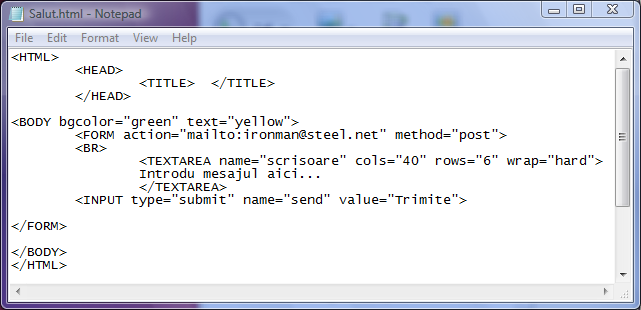

Eticheta TEXTAREA
Eticheta TEXTAREA deschide un camp de editare multilinie care permite utilizatorului sa introduca text pe
mai multe randuri, in diverse scopuri. De exemplu un asemenea camp de editare multilinie ar fi util pentru scrierea
unui mesaj si trimiterea prin posta electronica sau, introducerea de comentarii referitoare la un produs vandut de
o firma online. Trebuie marcat sfarsitul campului de editare cu o eticheta /TEXTAREA.
Definirea campului de editare multilinie se face cu ajutorul atributelor etichetei TEXTAREA, prin valorile acestor
atribute.
Iata mai jos lista atributelor etichetei TEXTAREA, semnificatia si valorile lor:
-atributul name prin valoarea sa stabileste un nume pentru controlul camp de editare multilinie. Acest nume va fi
asociat cu continutul editat de utilizator si trimis la server.
-atributul cols are ca valoare un numar intreg si reprezinta numarul de caractere care pot fi editate pe o
linie ca casetei de text. Prin urmare acest atribut determina latimea campului de editare.
-atributul rows specifica numarul de randuri care pot fi afisate simultan. Daca numarul de randuri excede valoarea
atributului rows, atunci se va activa bara de derulare pe verticala.
-atributul wrap stabileste comportamentul fata de sfarsitul de linie. Valorile acestui atribut sunt:
wrap="off" -in acest caz trecerea la rand nou se va face doar atunci cand doreste utilizatorul. Caracterul de sfarsit de linie
este inclus in textul transmis serverului.
wrap="hard" -in acest caz se produce trecerea la rand nou la marginea dreapta a casetei in mod automat iar caracterul de sfarsit
de linie este inclus in textul care va fi transmis.
wrap="soft" -in acest caz desi se produce intreruperea automata a randului la marginea dreapta, caracterul de sfarsit
de rand nu va fi inclus in mesajul trsansmis serverului.
Mai jos este prezentat un exemplu de utilizare a controlului TEXTAREA pentru trimiterea unui e-mail la o adresa
fictiva:

Inapoi la Controale...